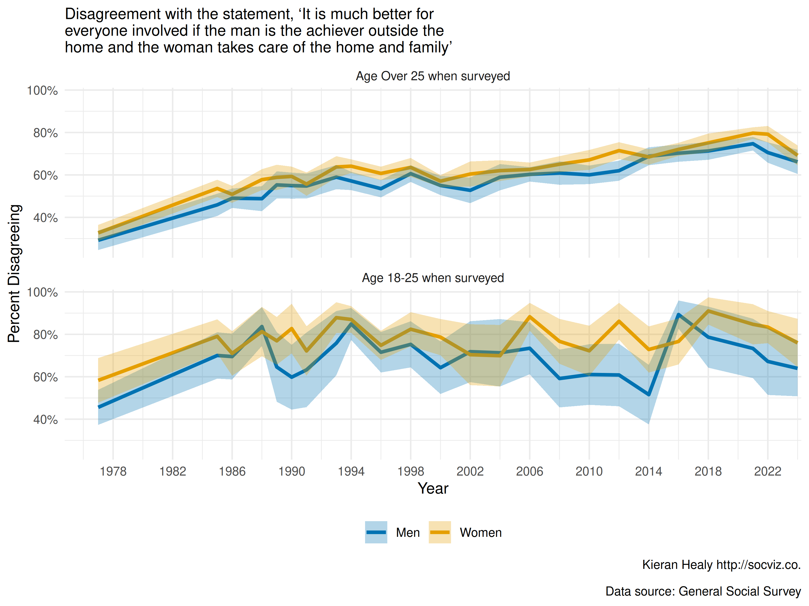

The General Social Survey, or GSS, is one of the cornerstones of American social science and one of the most-analyzed datasets in Sociology. It is routinely used in research, in teaching, and as a reference point in discussions about changes in American society since the early 1970s. It is also a model of open, public data. The National Opinion Research Center already provides many excellent tools for working with the data, and has long made it freely available to researchers. Casual users of the GSS can examine the GSS Data Explorer, and social scientists can download complete datasets directly. At present, the GSS is provided to researchers in a choice of two commercial formats, Stata (.dta) and SPSS (.sav). It’s not too difficult to get the data into R (especially now that the Haven package is pretty reliable), but it can be a little annoying to have to do it repeatedly. After doing it one too many times, I got tired of it and I made a package instead. The gssr package provides the GSS Cumulative Data File (1972-2018) and three GSS Three Wave Panel Data Files (for panels beginning in 2006, 2008, and 2010, respectively), together with GSS codebooks, in a format that makes it straightforward to get started working with them in R. The gssr package makes the GSS a little more accessible to users of R, the free software environment for statistical computing, and thus helps in a small way to make the GSS even more open than it already is.
This article makes use of some additional packages beyond gssr itself. My assumption is that users of gssr will most likely use and analyze the data in conjunction with some combination of Tidyverse tools and the survey, srvyr, and panelr packages.
library(dplyr)
#>
#> Attaching package: 'dplyr'
#> The following objects are masked from 'package:stats':
#>
#> filter, lag
#> The following objects are masked from 'package:base':
#>
#> intersect, setdiff, setequal, union
library(ggplot2)
library(survey)
#> Loading required package: grid
#> Loading required package: Matrix
#> Loading required package: survival
#>
#> Attaching package: 'survey'
#> The following object is masked from 'package:graphics':
#>
#> dotchart
library(srvyr)
#>
#> Attaching package: 'srvyr'
#> The following object is masked from 'package:stats':
#>
#> filter
library(gssr)
#> Package loaded. To attach the GSS data, type data(gss_all) at the console.
#> For the codebook, type data(gss_doc).
#> For the panel data and documentation, type e.g. data(gss_panel08_long) and data(gss_panel_doc).We will begin with the Cumulative Data file (1972-2018). As the startup message notes, the data objects are not automatically loaded. That is, we do not use R’s “lazy loading” functionality. This is because the main GSS dataset is rather large. Instead we load it manually with data(). For the purposes of this vignette, because the full Cumulative Data object is big, we will use just a few columns of it stored in an object called gss_sub. But all the code here will also work with the full dataset object, gss_all, which you can load with the command data(gss_all). We will also load the tibble that contains the codebook for the Cumulative Data File. This is called gss_doc.
data(gss_sub)
data(gss_doc)
gss_doc
#> # A tibble: 6,144 × 5
#> id description properties marginals text
#> <chr> <chr> <list> <list> <chr>
#> 1 caseid YEAR + Respondent ID <tibble [2 × 3]> <tibble [… None
#> 2 year GSS year for this respondent <tibble [2 × 3]> <tibble [… None
#> 3 id Respondent ID number <tibble [2 × 3]> <tibble [… None
#> 4 age Age of respondent <tibble [3 × 3]> <tibble [… 13. Respon…
#> 5 sex Respondents sex <tibble [3 × 3]> <tibble [… 23. Code r…
#> 6 race Race of respondent <tibble [3 × 3]> <tibble [… 24. What r…
#> 7 racecen1 What Is R's race 1st mention <tibble [3 × 3]> <tibble [… 1602. What…
#> 8 racecen2 What Is R's race 2nd mention <tibble [3 × 3]> <tibble [… 1602. What…
#> 9 racecen3 What Is R's race 3rd mention <tibble [3 × 3]> <tibble [… 1602. What…
#> 10 hispanic Hispanic specified <tibble [3 × 3]> <tibble [… 1601. IF R…
#> # … with 6,134 more rowsThe GSS data comes in a labelled format, mirroring the way it is encoded for Stata and SPSS platforms. The numeric codes are the content of the column cells. The labeling information is stored as an attribute of the column.
gss_sub
#> # A tibble: 64,814 × 14
#> year id ballot age race sex fefam vpsu vstrat oversamp formwt
#> <dbl> <dbl> <hvn_lbll> <hvn_> <hvn_> <hvn> <hvn> <hvn> <hvn_> <dbl> <dbl>
#> 1 1972 1 NA 23 1 2 NA NA NA 1 1
#> 2 1972 2 NA 70 1 1 NA NA NA 1 1
#> 3 1972 3 NA 48 1 2 NA NA NA 1 1
#> 4 1972 4 NA 27 1 2 NA NA NA 1 1
#> 5 1972 5 NA 61 1 2 NA NA NA 1 1
#> 6 1972 6 NA 26 1 1 NA NA NA 1 1
#> 7 1972 7 NA 28 1 1 NA NA NA 1 1
#> 8 1972 8 NA 27 1 1 NA NA NA 1 1
#> 9 1972 9 NA 21 2 2 NA NA NA 1 1
#> 10 1972 10 NA 30 2 2 NA NA NA 1 1
#> # … with 64,804 more rows, and 3 more variables: wtssall <hvn_lbll>,
#> # sampcode <hvn_lbll>, sample <hvn_lbll>We will use the label information later when recoding the variables into, say, character or factor variables. The labels and values are reflected in the codebook tibble. To see them, pull out the marginals list-column:
gss_doc %>% filter(id == "race") %>%
select(marginals) %>%
tidyr::unnest(cols = c(marginals))
#> # A tibble: 4 × 5
#> percent n value label id
#> <dbl> <chr> <chr> <chr> <chr>
#> 1 80.3 52,033 1 WHITE RACE
#> 2 14.2 9,187 2 BLACK RACE
#> 3 5.5 3,594 3 OTHER RACE
#> 4 100 64,814 <NA> Total RACE
gss_doc %>% filter(id == "sex") %>%
select(marginals) %>%
tidyr::unnest(cols = c(marginals))
#> # A tibble: 3 × 5
#> percent n value label id
#> <dbl> <chr> <chr> <chr> <chr>
#> 1 44.1 28,614 1 MALE SEX
#> 2 55.9 36,200 2 FEMALE SEX
#> 3 100 64,814 <NA> Total SEXAlternatively, use the function gss_get_marginals() to see a tibble for one or more categorical variables:
gss_get_marginals(varnames = c("sex", "race", "fefam"))
#> # A tibble: 15 × 6
#> variable percent n value label id
#> <chr> <dbl> <int> <chr> <chr> <chr>
#> 1 sex 44.1 28614 1 MALE SEX
#> 2 sex 55.9 36200 2 FEMALE SEX
#> 3 sex 100 64814 <NA> Total SEX
#> 4 race 80.3 52033 1 WHITE RACE
#> 5 race 14.2 9187 2 BLACK RACE
#> 6 race 5.5 3594 3 OTHER RACE
#> 7 race 100 64814 <NA> Total RACE
#> 8 fefam 8.5 2543 1 STRONGLY AGREE FEFAM
#> 9 fefam 29.9 8992 2 AGREE FEFAM
#> 10 fefam 43.4 13061 3 DISAGREE FEFAM
#> 11 fefam 18.2 5479 4 STRONGLY DISAGREE FEFAM
#> 12 fefam NA 34111 0 IAP FEFAM
#> 13 fefam NA 534 8 DK FEFAM
#> 14 fefam NA 94 9 <NA> FEFAM
#> 15 fefam 100 64814 <NA> Total FEFAMA similar function lets you peek at the codebook’s properties for any variable:
gss_get_props(varnames = c("sex", "race", "fefam"))
#> # A tibble: 9 × 4
#> variable property value id
#> <chr> <chr> <chr> <chr>
#> 1 sex Data type numeric SEX
#> 2 sex Missing-data code 0 SEX
#> 3 sex Record/column 1/297 SEX
#> 4 race Data type numeric RACE
#> 5 race Missing-data code 0 RACE
#> 6 race Record/column 1/298 RACE
#> 7 fefam Data type numeric FEFAM
#> 8 fefam Missing-data codes 0,8,9 FEFAM
#> 9 fefam Record/column 1/1114 FEFAMThe description and any additional codebook text can be extracted directly:
The GSS is a complex survey. When working with it, we need to take its structure into account in order to properly calculate statistics such as the population mean for a variable in some year, its standard error, and so on. For these tasks we use the survey and srvyr packages. For details on survey, see Lumley (2010). We will also do some recoding prior to analyzing the data, so we load several additional tidyverse packages to assist us.
We will examine a topic that was the subject of recent media attention, in the New York Times and elsewhere, regarding the beliefs of young men about gender roles. Some surveys seemed to point to some recent increasing conservatism on this front amongst young men. As it happens, the GSS has a longstanding question named fefam, where respondents are asked to give their opinion on the following statement:
It is much better for everyone involved if the man is the achiever outside the home and the woman takes care of the home and family.
Respondents may answer that they Strongly Agree, Agree, Disagree, or Strongly Disagree with the statement (as well as refusing to answer, or saying they don’t know).
The GSS data retains labeling information (as it was originally imported via the haven package). When working with the data in an analysis, we will probably want to convert the labeled variables to data types such as factors. This should be done with care (and not on the whole dataset all at once). Typically, we will want to focus on some relatively small subset of variables and examine those. For example, let’s say we want to explore the fefam question. We will subset the data and then prepare that for analysis. Here we are going to subset gss_sub into an object called gss_fam containing just the variables we want to examine, along with core measures that identify respondents (such as id and year) and variables necessary for the survey weighting later (such as wtssall).
cont_vars <- c("year", "id", "ballot", "age")
cat_vars <- c("race", "sex", "fefam")
wt_vars <- c("vpsu",
"vstrat",
"oversamp",
"formwt", # weight to deal with experimental randomization
"wtssall", # weight variable
"sampcode", # sampling error code
"sample") # sampling frame and method
my_vars <- c(cont_vars, cat_vars, wt_vars)
gss_fam <- gss_sub %>%
select(all_of(my_vars))
gss_fam
#> # A tibble: 64,814 × 14
#> year id ballot age race sex fefam vpsu vstrat oversamp formwt
#> <dbl> <dbl> <hvn_lbll> <hvn_> <hvn_> <hvn> <hvn> <hvn> <hvn_> <dbl> <dbl>
#> 1 1972 1 NA 23 1 2 NA NA NA 1 1
#> 2 1972 2 NA 70 1 1 NA NA NA 1 1
#> 3 1972 3 NA 48 1 2 NA NA NA 1 1
#> 4 1972 4 NA 27 1 2 NA NA NA 1 1
#> 5 1972 5 NA 61 1 2 NA NA NA 1 1
#> 6 1972 6 NA 26 1 1 NA NA NA 1 1
#> 7 1972 7 NA 28 1 1 NA NA NA 1 1
#> 8 1972 8 NA 27 1 1 NA NA NA 1 1
#> 9 1972 9 NA 21 2 2 NA NA NA 1 1
#> 10 1972 10 NA 30 2 2 NA NA NA 1 1
#> # … with 64,804 more rows, and 3 more variables: wtssall <hvn_lbll>,
#> # sampcode <hvn_lbll>, sample <hvn_lbll>Next, we will do some recoding and create some new variables. We also create some new variables: age quintiles, a variable flagging whether a respondent is 25 or younger, recoded fefam to binary “Agree” or “Disagree” (with non-responses dropped).
We begin by figuring out the cutpoints for age quintiles.
qrts <- quantile(as.numeric(gss_fam$age),
na.rm = TRUE)
qrts
#> 0% 25% 50% 75% 100%
#> 18 31 44 59 89
quintiles <- quantile(as.numeric(gss_fam$age),
probs = seq(0, 1, 0.2), na.rm = TRUE)
quintiles
#> 0% 20% 40% 60% 80% 100%
#> 18 29 38 49 63 89Next, we clean up gss_fam a bit, discarding some of the label and missing value information we don’t need. The data in gss_all retains the labeling structure provided by the GSS. Variables are stored numerically with labels attached to them. Often, when using the data in R, it will be convenient to convert the categorical variables we are interested in to character or factor type instead.
## Recoding
## The convert_agegrp() and capwords() functions seen here are defined
## at the top of the Rmd file used to produce this document.
gss_fam <- gss_fam %>%
mutate(
# Convert all missing to NA
across(everything(), haven::zap_missing),
# Convert all weight vars to numeric
across(all_of(wt_vars), as.numeric),
# Make all categorical variables factors and relabel nicely
across(all_of(cat_vars), forcats::as_factor),
across(all_of(cat_vars), forcats::fct_relabel, capwords, strict = TRUE),
# Create the age groups
ageq = cut(x = age, breaks = unique(qrts), include.lowest = TRUE),
ageq = forcats::fct_relabel(ageq, convert_agegrp),
agequint = cut(x = age, breaks = unique(quintiles), include.lowest = TRUE),
agequint = forcats::fct_relabel(agequint, convert_agegrp),
year_f = droplevels(factor(year)),
young = ifelse(age < 26, "Yes", "No"),
# Dichotomize fefam
fefam = forcats::fct_recode(fefam, NULL = "IAP", NULL = "DK", NULL = "NA"),
fefam_d = forcats::fct_recode(fefam,
Agree = "Strongly Agree",
Disagree = "Strongly Disagree"),
fefam_n = recode(fefam_d, "Agree" = 0, "Disagree" = 1),
# Weights
compwt = oversamp * formwt * wtssall,
samplerc = case_when(sample %in% c(3:4) ~ 3,
sample %in% c(6:7) ~ 6,
TRUE ~ sample))
gss_fam
#> # A tibble: 64,814 × 22
#> year id ballot age race sex fefam vpsu vstrat oversamp formwt
#> <dbl> <dbl> <dbl+lbl> <dbl+lbl> <fct> <fct> <fct> <dbl> <dbl> <dbl> <dbl>
#> 1 1972 1 NA 23 White Fema… <NA> NA NA 1 1
#> 2 1972 2 NA 70 White Male <NA> NA NA 1 1
#> 3 1972 3 NA 48 White Fema… <NA> NA NA 1 1
#> 4 1972 4 NA 27 White Fema… <NA> NA NA 1 1
#> 5 1972 5 NA 61 White Fema… <NA> NA NA 1 1
#> 6 1972 6 NA 26 White Male <NA> NA NA 1 1
#> 7 1972 7 NA 28 White Male <NA> NA NA 1 1
#> 8 1972 8 NA 27 White Male <NA> NA NA 1 1
#> 9 1972 9 NA 21 Black Fema… <NA> NA NA 1 1
#> 10 1972 10 NA 30 Black Fema… <NA> NA NA 1 1
#> # … with 64,804 more rows, and 11 more variables: wtssall <dbl>,
#> # sampcode <dbl>, sample <dbl>, ageq <fct>, agequint <fct>, year_f <fct>,
#> # young <chr>, fefam_d <fct>, fefam_n <dbl>, compwt <dbl>, samplerc <dbl>At this point we can calculate some percentages, such as the percent of male and female respondents disagreeing with the fefam proposition each year.
gss_fam %>%
group_by(year, sex, young, fefam_d) %>%
tally() %>%
drop_na() %>%
mutate(pct = round((n/sum(n))*100, 1)) %>%
select(-n)
#> # A tibble: 168 × 5
#> # Groups: year, sex, young [84]
#> year sex young fefam_d pct
#> <dbl> <fct> <chr> <fct> <dbl>
#> 1 1977 Male No Agree 71.8
#> 2 1977 Male No Disagree 28.2
#> 3 1977 Male Yes Agree 54.3
#> 4 1977 Male Yes Disagree 45.7
#> 5 1977 Female No Agree 66.6
#> 6 1977 Female No Disagree 33.4
#> 7 1977 Female Yes Agree 41.9
#> 8 1977 Female Yes Disagree 58.1
#> 9 1985 Male No Agree 53.6
#> 10 1985 Male No Disagree 46.4
#> # … with 158 more rowsHowever, these calculations do not take the GSS survey design into account. We set up the data so we can properly calculate population means and errors and so on. We use the svyr package’s wrappers to survey for this.
options(survey.lonely.psu = "adjust")
options(na.action="na.pass")
gss_svy <- gss_fam %>%
filter(year > 1974) %>%
tidyr::drop_na(fefam_d, young) %>%
mutate(stratvar = interaction(year, vstrat)) %>%
as_survey_design(id = vpsu,
strata = stratvar,
weights = wtssall,
nest = TRUE)The gss_svy object contains the same data as gss_fam, but incorporates information about the sampling structure in a way that the survey package’s functions can work with:
gss_svy
#> Stratified 1 - level Cluster Sampling design (with replacement)
#> With (3583) clusters.
#> Called via srvyr
#> Sampling variables:
#> - ids: vpsu
#> - strata: stratvar
#> - weights: wtssall
#> Data variables: year (dbl), id (dbl), ballot (dbl+lbl), age (dbl+lbl), race
#> (fct), sex (fct), fefam (fct), vpsu (dbl), vstrat (dbl), oversamp (dbl),
#> formwt (dbl), wtssall (dbl), sampcode (dbl), sample (dbl), ageq (fct),
#> agequint (fct), year_f (fct), young (chr), fefam_d (fct), fefam_n (dbl),
#> compwt (dbl), samplerc (dbl), stratvar (fct)We’re now in a position to calculate some properly-weighted summary statistics for the variable we’re interested in, for every year it is in the data.
## Get the breakdown for every year
out_ff <- gss_svy %>%
group_by(year, sex, young, fefam_d) %>%
summarize(prop = survey_mean(na.rm = TRUE, vartype = "ci"))
out_ff
#> # A tibble: 168 × 7
#> # Groups: year, sex, young [84]
#> year sex young fefam_d prop prop_low prop_upp
#> <dbl> <fct> <chr> <fct> <dbl> <dbl> <dbl>
#> 1 1977 Male No Agree 0.726 0.685 0.766
#> 2 1977 Male No Disagree 0.274 0.234 0.315
#> 3 1977 Male Yes Agree 0.551 0.469 0.633
#> 4 1977 Male Yes Disagree 0.449 0.367 0.531
#> 5 1977 Female No Agree 0.674 0.639 0.709
#> 6 1977 Female No Disagree 0.326 0.291 0.361
#> 7 1977 Female Yes Agree 0.415 0.316 0.514
#> 8 1977 Female Yes Disagree 0.585 0.486 0.684
#> 9 1985 Male No Agree 0.542 0.496 0.587
#> 10 1985 Male No Disagree 0.458 0.413 0.504
#> # … with 158 more rowsWe finish with a polished plot of the trends in fefam over time, for men and women in two (recoded) age groups over time.
theme_set(theme_minimal())
facet_names <- c("No" = "Age Over 25 when surveyed",
"Yes" = "Age 18-25 when surveyed")
fefam_txt <- "Disagreement with the statement, ‘It is much better for\neveryone involved if the man is the achiever outside the\nhome and the woman takes care of the home and family’"
out_ff %>%
filter(fefam_d == "Disagree") %>%
ggplot(mapping =
aes(x = year, y = prop,
ymin = prop_low,
ymax = prop_upp,
color = sex,
group = sex,
fill = sex)) +
geom_line(size = 1.2) +
geom_ribbon(alpha = 0.3, color = NA) +
scale_x_continuous(breaks = seq(1978, 2018, 4)) +
scale_y_continuous(labels = scales::percent_format(accuracy = 1)) +
scale_color_manual(values = my_colors("bly")[2:1],
labels = c("Men", "Women"),
guide = guide_legend(title=NULL)) +
scale_fill_manual(values = my_colors("bly")[2:1],
labels = c("Men", "Women"),
guide = guide_legend(title=NULL)) +
facet_wrap(~ young, labeller = as_labeller(facet_names),
ncol = 1) +
coord_cartesian(xlim = c(1977, 2017)) +
labs(x = "Year",
y = "Percent Disagreeing",
subtitle = fefam_txt,
caption = "Kieran Healy http://socviz.co.\n
Data source: General Social Survey") +
theme(legend.position = "bottom")
In addition to the Cumulative Data File, the gssr package also includes the GSS’s panel data. The current rotating panel design began in 2006. A panel of respondents were interviewed that year and followed up on for further interviews in 2008 and 2010. A second panel was interviewed beginning in 2008, and was followed up on for further interviews in 2010 and 2012. And a third panel began in 2010, with follow-up interviews in 2012 and 2014. The gssr package provides three datasets, one for each of three-wave panels. They are gss_panel06_long, gss_panel08_long, and gss_panel10_long. The datasets are provided by the GSS in wide format but (as their names suggest) are packaged here in long format. The conversion was carried out using the panelr package and its long_panel() function. Conversion from long back to wide format is possible with the tools provided in panelr.
We load the panel data as before. For example:
data(gss_panel06_long)
gss_panel06_long
#> # A tibble: 6,000 × 1,572
#> firstid wave ballot form formwt oversamp sampcode sample samptype
#> <fct> <dbl> <dbl+lbl> <dbl+l> <dbl> <dbl> <dbl+lb> <dbl+l> <dbl+lbl>
#> 1 9 1 3 [BALLOT C] 2 [ALT… 1 1 501 9 [200… 2006 [200…
#> 2 9 2 3 [BALLOT C] 2 [ALT… 1 1 501 9 [200… 2006 [200…
#> 3 9 3 3 [BALLOT C] 2 [ALT… 1 1 501 9 [200… 2006 [200…
#> 4 10 1 1 [BALLOT A] 1 [STA… 1 1 501 9 [200… 2006 [200…
#> 5 10 2 1 [BALLOT A] 1 [STA… 1 1 501 9 [200… 2006 [200…
#> 6 10 3 1 [BALLOT A] 1 [STA… 1 1 501 9 [200… 2006 [200…
#> 7 11 1 3 [BALLOT C] 2 [ALT… 1 1 501 9 [200… 2006 [200…
#> 8 11 2 3 [BALLOT C] 2 [ALT… 1 1 501 9 [200… 2006 [200…
#> 9 11 3 3 [BALLOT C] 2 [ALT… 1 1 501 9 [200… 2006 [200…
#> 10 12 1 1 [BALLOT A] 2 [ALT… 1 1 501 9 [200… 2006 [200…
#> # … with 5,990 more rows, and 1,563 more variables: vstrat <dbl+lbl>,
#> # vpsu <dbl+lbl>, wtpan12 <dbl+lbl>, wtpan123 <dbl+lbl>, wtpannr12 <dbl+lbl>,
#> # wtpannr123 <dbl+lbl>, letin1a <dbl+lbl>, abany <dbl+lbl>,
#> # abdefect <dbl+lbl>, abhlth <dbl+lbl>, abnomore <dbl+lbl>, abpoor <dbl+lbl>,
#> # abrape <dbl+lbl>, absingle <dbl+lbl>, accntsci <dbl+lbl>,
#> # acqasian <dbl+lbl>, acqattnd <dbl+lbl>, acqblack <dbl+lbl>,
#> # acqbrnda <dbl+lbl>, acqchild <dbl+lbl>, acqcohab <dbl+lbl>, …The panel data objects were created by panelr but are regular tibbles. The column names in long format do not have wave identifiers. Rather, firstid and wave variables track the cases. The firstid variable is unique for every row and has no missing values. The id variable is from the GSS and tracks individuals within waves.
gss_panel06_long %>% select(firstid, wave, id, sex)
#> # A tibble: 6,000 × 4
#> firstid wave id sex
#> <fct> <dbl> <dbl+lbl> <dbl+lbl>
#> 1 9 1 9 2 [FEMALE]
#> 2 9 2 3001 2 [FEMALE]
#> 3 9 3 6001 2 [FEMALE]
#> 4 10 1 10 2 [FEMALE]
#> 5 10 2 3002 2 [FEMALE]
#> 6 10 3 6002 2 [FEMALE]
#> 7 11 1 11 2 [FEMALE]
#> 8 11 2 3003 2 [FEMALE]
#> 9 11 3 6003 2 [FEMALE]
#> 10 12 1 12 1 [MALE]
#> # … with 5,990 more rowsWe can look at attrition across waves with, e.g.:
gss_panel06_long %>%
select(wave, id) %>%
group_by(wave) %>%
summarize(observed = n_distinct(id),
missing = sum(is.na(id)))
#> # A tibble: 3 × 3
#> wave observed missing
#> <dbl> <int> <int>
#> 1 1 2000 0
#> 2 2 1537 464
#> 3 3 1277 724The documentation tibble for the panel data is called gss_panel_doc.
data(gss_panel_doc)
gss_panel_doc
#> # A tibble: 628 × 9
#> id description text properties_1 properties_2 properties_3 marginals_1
#> <chr> <chr> <chr> <list> <list> <list> <list>
#> 1 caseid CASEID None <tibble [2 … <NULL> <NULL> <tibble [1…
#> 2 year YEAR None <tibble [3 … <tibble [3 … <tibble [3 … <tibble [2…
#> 3 id ID None <tibble [3 … <tibble [3 … <tibble [3 … <tibble [1…
#> 4 age AGE 13. … <tibble [3 … <tibble [3 … <tibble [3 … <tibble [1…
#> 5 sex SEX 23. … <tibble [3 … <tibble [3 … <tibble [3 … <tibble [3…
#> 6 race RACE 24. … <tibble [3 … <tibble [3 … <tibble [3 … <tibble [4…
#> 7 racecen1 RACECEN1 1602… <tibble [3 … <tibble [3 … <tibble [3 … <tibble [1…
#> 8 racecen2 RACECEN2 1602… <tibble [3 … <tibble [3 … <tibble [3 … <tibble [2…
#> 9 racecen3 RACECEN3 1602… <tibble [3 … <tibble [3 … <tibble [3 … <tibble [1…
#> 10 hispanic HISPANIC 1601… <tibble [3 … <tibble [3 … <tibble [3 … <tibble [3…
#> # … with 618 more rows, and 2 more variables: marginals_2 <list>,
#> # marginals_3 <list>Each row is a variable. The id, description, and text columns provide the details on each question or measure. The properties and marginals are provided in the remaining columns, with a suffix indicating the wave. The categorical variables in the panel codebook can be queried in the same way as those in the cumulative codebook. We specify that we want to look at gss_panel_doc rather than gss_doc and we say which property wave or marginals wave we want to see. We specify that we want to look at gss_panel_doc rather than gss_doc. Be sure to specify which wave you want marginals for, with the margin argument.
gss_get_marginals(varnames = c("sex", "race"),
data = gss_panel_doc,
margin = marginals_1)
#> # A tibble: 7 × 6
#> variable percent n value label id
#> <chr> <dbl> <int> <chr> <chr> <chr>
#> 1 sex 42.7 854 1 MALE SEX_1
#> 2 sex 57.3 1146 2 FEMALE SEX_1
#> 3 sex 100 2000 <NA> Total SEX_1
#> 4 race 73.2 1464 1 WHITE RACE_1
#> 5 race 14.2 285 2 BLACK RACE_1
#> 6 race 12.6 251 3 OTHER RACE_1
#> 7 race 100 2000 <NA> Total RACE_1